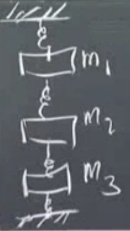
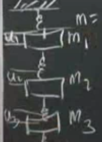
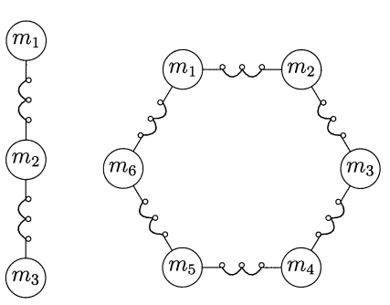

Ders 1-8
Yaylar ve Ağırlıklar (Springs and Masses)
Dersimizin uygulama kısmına geldik. Diyelim ki alttaki gibi bir yay sistemi var, 4 tane yay 3 tane ağırlıktan oluşuyor, ve sonları duvar, tavan gibi bir yerde sabitlenmiş.

Kütlelerin bir ağırlığı var tabii, ağırlıklar o yaylar aşağı doğru çekiyor, bu çekim yayları açacak, gerecek, soru yayların ne kadar aşağı ineceği. Bir yer değişim (displacement) sorusu bu yani. Unutmayalım yay açılıp kapanan bir mekanizmadır ama açılırken de kapanırken de bir direnç gösterir. Yer değişim en üstte ve en altta sıfır çünkü oralar sabitlenmiş.
Bir başlangıç hali düşünürsek, diyelim ki yerçekimi o anda etkisiz, ama sonra yerçekimini bir düğmeye basıp açıyoruz, her yay başlangıç halinden aşağı doğru bir yer değişimi yaşıyor,

bunlara $u_1,u_2,u_3$ diyebiliriz.
Dikkat salınımı ölçmeye uğraşmıyoruz burada, o daha sonraki derslerde devreye girecek, zaman faktörünü resme dahil edeceğiz; o sonra.. Şimdi sadece kalıcı durumla ilgileniyorum, yerçekimi açılıyor, yaylar aşağı doğru uzuyor, ve her şey yerli yerine oturduktan sonra gözlemlenecek yer değişimiyle ilgileniyorum.
Her yay parçasının ne kadar uzadığı / esnediği (elongation) ayrı bir ölçüt. Düşünürsek ikinci kütledeki yer değişimi $u_2$ içinde hem ikinci hem de birinci yayın esnemesi rol oynar. O yüzden esneme için ayrı bir değişken kullanıyoruz, $e_1,e_2,e_3$. O zaman ikinci yay ne kadar uzar? $u_2-u_1$ kadar. Bir farktan bahsediyoruz burada. Bazı yaylar sıkışma da yaşayabilir tabii, mesela tahmin ediyorum ki en alttaki yayda sıkışma olacak.
Tüm bunlar işin geometrik kısmı bir anlamda, yer, uzama, kısalma.. Materyel faktörleri de resme dahil etmek lazım, Hooke Kanunu bunu yapacak. İlk ağırlık mesela aşağı inerken ilk yayı gerecek. Hooke Kanunu bu noktada der ki yay belli bir kuvvetle ağırlığı geri çekecek, bu çekiş yayın gerilmesi / uzamasıyla orantılı olacak. Her yaydaki kuvvete $w_1,w_2,w_3,w_4$ diyelim. Esneme ile ona karşılık ortaya çıkan kuvvet ilişkisi her materyel için farklı olur, yay çeşidine göre değisen Hooke yay sabiti bu farklılığı denkleme dahil edebilir, bu sabitlere $c_1,c_2,c_3,c_4$ diyelim.
Hooke Kanunu lineerdir, ki aşırı fazla olmayan esnemeler için lineerlik geçerli olacaktır, muhakkak yayı aşırı gerseydik belli bir noktadan sonra lineer olmayan etkiler görebilirdik, biz bu tür aşırı sonuçlara şu anda bakmıyoruz.
Devam edelim, Hooke Kanunu der ki her yaydaki kuvvet o yaydaki esnemeyle orantılıdır,
$$ w_i = c_i e_i $$
Burada bir köşegen matris görüyorum ben, tüm yaylar, esnemeler, sabitler için
$$ \left[\begin{array}{c} w_1 \\ w_2 \\ w_3 \\ w_4 \end{array}\right] = \left[\begin{array}{cccc} c_1 & & & \\ & c_2 & & \\ & & c_3 & \\ & & & c_4 \end{array}\right] \left[\begin{array}{c} e_1 \\ e_2 \\ e_3 \\ e_4 \end{array}\right] $$
Ve nihai matris formunda
$$ w = C e $$
ki $w,C,e$ üstte görülen vektörler ve matris. Materyel kısmı bu şekilde dahil etmiş olduk, ortadaki sabit matrisi üzerinden. Benzer kanunlar fiziğin diğer alanlarında da görülebilir, mesela üstteki $C$ matrisi iletkenliği de temsil ediyor olabilirdi. Demek istediğim materyel özellikler denkleme oradan dahil oluyor. Bu resmi nasıl tamamlarız? Yerçekim bir dış kuvvet, kütleler var, yer değişimlerine sebep oluyor..
Resmi tamamlamak icin "kuvvet denge" denklemi ekleyecegim, her kütle icin bir denge denklemi olacak.
Not ekleyelim, üstteki türden problem modellemesi pek çok diğer uygulamada işe yarıyor. Bir geometri var, buradan bir $A$ matrisi çıkartıyoruz, sonra bir fiziksel adım var, oradan $C$ matrisi geliyor, ve kuvvet dengesi ekleniyor, resim tamamlanıyor. Kuvvet denge denklemi diğer bir alanda, mesela elektrikte, Kırchoff Akım Kanunu olabilirdi, ileride ağ yapılarına bakarken göreceğiz, giren akım çıkan akıma eşit.. Buradaki denge bir yandaki kuvvetin diğer yandakine eşit olması. Eğer sistemde bir dengeden (equilibrium) bahsedebiliyorsak bir denge denklemi yazabiliriz demektir.
Şimdi esneme kısmını matris formuna çevirelim. Ne demiştik? Mesela ikinci yay esnemesi eşittir ikinci yer değişimi eksi birinci yer değişimi. Matrissel formda konuşmak için $e_i$ ve $u_j$ vektörleri lazım, ilişkileri bir matris çarpımı. Alttaki matriste ikinci satıra ne yazarız?
$$ \left[\begin{array}{c} e_1 \\ e_2 \\ e_3 \\ e_4 \end{array}\right] = \left[\begin{array}{cccc} & & \\ ? & ? & ? \\ & & \\ & & \end{array}\right] \left[\begin{array}{c} u_1 \\ u_2 \\ u_3 \end{array}\right] $$
O satır sağdaki $u$ vektörü ile çarpılacak ve sonuçlar toplanacak, o zaman $u_1$ eksi bir ile, $u_2$ artı bir ile çarpılır, $u_3$ ile ilgilenmiyoruz, orası sıfır, yani
$$ \left[\begin{array}{c} e_1 \\ e_2 \\ e_3 \\ e_4 \end{array}\right] = \left[\begin{array}{cccc} & & \\ -1 & 1 & 0 \\ & & \\ & & \end{array}\right] \left[\begin{array}{c} u_1 \\ u_2 \\ u_3 \end{array}\right] $$
Üstte görülen satır bu tür matrislerde tipik bir satırdır. Peki birinci satır neye benzer? Orada sadece $u_1$ olur, tabii $u_1 - u_0$ farkı ama ilk yay en üstte sabitlendiği için orada yer değişim olması mümkün değil $u_0 = 0$, geriye sadece $u_1$ kalıyor.
Üçüncü satır kolay. Dördüncü satırda $u_4$ sabitlenmiş yani sıfır, tek kalan $-u_3$. Hepsi bir arada,
$$ \left[\begin{array}{c} e_1 \\ e_2 \\ e_3 \\ e_4 \end{array}\right] = \left[\begin{array}{rrrr} 1 & 0 & 0 \\ -1 & 1 & 0 \\ 0 & -1 & 1 \\ 0 & 0 & -1 \end{array}\right] \left[\begin{array}{c} u_1 \\ u_2 \\ u_3 \end{array}\right] \qquad (1) $$
Matrise $A$ ismi verirsek, üstteki denklem $e = A u $ olarak belirtilebilir.
Bir adım daha var, kuvvet denge denklemi. Dışarıdan etki eden kuvvet yerçekimi, $m_1 g$, $m_2 g$, $m_3 g$. Denge için mesela ilk kütleye bakarım, ona hangi kuvvetler etki eder diye sorarım kendime ve onları dengelemeye uğraşırım. Bu bana nasıl bir denklem verir acaba?
İlk kütle için etki eden kuvvetlere bakarsak, yukarı, aşağı.. Yukarı çeken bir kuvvet var, yay kuvveti $w_1$. Aşağı çeken $w_2$, değil mi? Alttaki yay her iki yöne de bir kuvvet uygular. Ayrıca bir de yerçekimi var, $m_1 g$. Hepsi bir arada
$$ w_1 = w_2 + m_1 g $$
Diğerleri benzer şekilde,
$$ w_2 = w_3 + m_2 g $$
$$ w_3 = w_4 + m_3 g $$
Üsttekini vektör, matris olarak yazmak istiyorum tabii ki, $w$'ların hepsini sol tarafa geçirirsek işler daha kolaylaşabilir,
$$ w_1 - w_2 = m_1 g $$
$$ w_2 - w_3 = m_2 g $$
$$ w_3 - w_4 = m_3 g $$
Bunlar dış kuvvetler.. Yani (1)'deki iç kuvvetlerle üstteki dış kuvvetleri dengeleyeceğiz, $w$'lar iç kuvvetler. Bir matris ortaya çıkacak şimdi. Önceki numarayı tekrarlarsak,
$$ \left[\begin{array}{rrrr} 1 & -1 & 0 & 0 \\ 0 & 1 & -1 & 0 \\ 0 & 0 & 1 & -1 \end{array}\right] \left[\begin{array}{c} w_1 \\ w_2 \\ w_3 \\ w_4 \end{array}\right] = \left[\begin{array}{c} f_1 \\ f_2 \\ f_3 \end{array}\right] \qquad (2) $$
ki $f_i = m_i g$.
Nasıl ufak adımlarla ilerledik görebiliyoruz herhalde.. Üç adım attık, birinci adım bizi yer değişimlerinden yaylara götürdü, ikincisi yaylar arasındaki ilişkilere baktı, üçüncü adım düğüm noktalara, kütlelere baktı.
Şimdi ana soru şu, üçüncü adımdaki matris nedir? Onun için yeni bir isme ihtiyacımız var mı?
Aslında yok. Dikkat edersek (2)'deki matris (1)'dekinin devriği değil mi? Evet! O zaman ona sadece $A^T$ diyeceğiz.
Üç adımdaki formülleri yanyana koyalım şimdi,
$$ e = Au \qquad (3) $$
$$ w = Ce \qquad (4) $$
$$ f = A^T w $$
Bu üç formülü birleştirip nasıl tek formül haline getiririm? Üçüncü formüldeki $w$ içine ikinci formüldeki $w$'yu sokabilirim, sonra elde edilenin içine birinci formüldeki $e$'yi sokarım,
$$ f = A^T w = A^T C e = A^T C A u $$
Nihai sonuç
$$ f = A^T C A u $$
Tüm yapıyı biraraya getiren formül bu işte, çözmemiz gereken nihai denklem. Literatürde $A^T C A$'ye direngenlik (stiffness) matrisi adı veriliyor, ben çoğunlukla o matris için $K$ sembolünü kullanırım, yani bu örnek için $K = A^T C A$ ve çözmemiz gereken sistem $K u = f$.
Bu arada $w$ bilinmiyor, aslında burada iki bilinmeyen, bulmaya uğraştığımız iki tane fiziksel değişken bloğu var, kuvvetler $w$ ve yer değişimleri $e$; bir köprü, başka bir tür yapı tasarlıyor olabilirdik, onun için yer değişimlerini ve içsel kuvvetler $w$ değerlerini arıyor olurduk. $w$ ve $u$ değişken öbekleri birbiriyle yakın ilintili (dual), bazen biri, bazen öteki, ya da ikisiyle aynı anda iş yapıyor olabiliriz, biraz ileri atlamak oluyor ama sonlu öğeler (finite element) metodu üstteki formül altyapısını çözer (aslında direngenlik matrisi kavramı oradan çıkmıştır, şimdi pek çok alanda görülebiliyor).
$A^T C A$ matrisine yakından bakmak bilgilendirici olur; mesela boyutları nedir? $A$ boyutu 4 x 3, $C$ boyutu 4 x 4, $A^T$ tabii ki 3 x 4, çarpımın sonucu 3 x 3.
Çarpım büyük ihtimalle simetrik, öyle mi bakalım, simetrik demek devriğin kendisi ile aynı olması demektir,
$$ (A^T C A)^T = A^T C^T (A^T)^T = A^T C A $$
Başlangıca döndük demek ki simetri var.
Şimdi $K = A^T C A$ çarpımına gelelim, onun bulmamız gerekiyor, bu bize tüm diğer çözümleri zincirleme verecek, $K u = f$ çözüyorsak, çözüm $u = K^{-1}f$. Eger $u$'yu biliyorsam esnemeyi biliyorum demektir, (3) formülü $e = A u$ idi, o zaman $e = A K^{-1} f$ demektir. Onu alıp (4) içine sokarım, $w = C e$ formülüne, o sonuç ta $w = C A K^{-1} f$. Listeden aşağı indim, hepsi teker teker çıktı, tabii anahtar ilk çözüm $u = K^{-1} f$.
Ondan önce soralım $K$ çarpımını yapmadan $K^{-1}$ içeriğini açsak, $K^{-1} = A^{-1}C^{-1} (A^T)^{-1}$ olur ve sağ tarafta bazı hızlı hesaplar yapabilir miydim acaba? Ne yazık ki $A$ matrisi kare matris olmayabilir ve bu tür matrislerin tersini almak istemiyorum.
O zaman $K$ için çarpım yapmamız lazım, yani
$$ K = \left[\begin{array}{rrrr} 1 & 0 & 0 \\ -1 & 1 & 0 \\ 0 & -1 & 1 \\ 0 & 0 & -1 \end{array}\right] \left[\begin{array}{cccc} c_1 & & & \\ & c_2 & & \\ & & c_3 & \\ & & & c_4 \end{array}\right] \left[\begin{array}{rrrr} 1 & -1 & 0 & 0 \\ 0 & 1 & -1 & 0 \\ 0 & 0 & 1 & -1 \end{array}\right] \qquad (5) $$
Biz altta bu çarpımı hemen sympy ile yapalım
import sympy aş sp
c1,c2,c3,c4 = sp.symbols('c1 c2 c3 c4')
A = sp.Matrix([[1, 0, 0],
[-1, 1, 0],
[0, -1, 1],
[0, 0, -1]])
C = sp.Matrix([ [c1, 0, 0, 0],
[0, c2, 0, 0],
[0, 0, c3, 0],
[0, 0, 0, c4] ])
K = A.transpose() * C * A
K
Out[1]:
Matrix([
[c1 + c2, -c2, 0],
[ -c2, c2 + c3, -c3],
[ 0, -c3, c3 + c4]])
İşte problemimizi kontrol eden $K$ matrisi bu. Matris kare, simetrik.
Bu tür matrisi daha önce görmüştük değil mi? Üstteki $c_i$ değerlerinin 1 olduğunu farz edin, o zaman $C$ matrisi birim matris olurdu, bu durumda geriye sadece $A^T A$ kalırdı.
$$ \left[\begin{array}{rrr} 2 & -1 & 0 \\ -1 & 2 & -1 \\ 0 & -1 & 2 \end{array}\right] $$
Bu matris daha önceki derste gördüğümüz özel $K$ matrisi.
İki üstteki matris, tekrar yazalım,
$$ K = \left[\begin{array}{rrr} c1 + c2 & -c2 & 0 \\ -c2 & c2 + c3 & -c3 \\ 0 & -c3 & c3 + c4 \end{array}\right] \qquad (6) $$
Tüm yay sabitleri bu matris içinde. Üstteki matris hakkında önemli bilgileri iki üstteki matristen anlayabiliriz.
$K$ hakkındaki önemli ipuçları nedir? Kare, simetrik dedik, ayrıca pozitif kesin bir matris. Ve pozitif kesinlik bizi diğer bir özelliğe götürür, bu matrisin tersi alınabilir.
Peki $K$ matrisi niye pozitif kesin? Hatırlarsak pozitif kesinliğin ana kavramı pozitif enerji idi. Şu ifade $u^T A^T C A u$ pozitif olmalı, parantezleri $(u^T A^T) C (A u)$ şeklinde koyunca belli oluyor, ya da $(u A)^T C (A u)$. Ayrıca $Au$ için bir eşitliğimiz var, $Au = e$ o zaman $e^T C e$. Eğer $e,C,e^T$ açık yazarsam,
$$ \left[\begin{array}{rrr} e_1 & e_2 & e_3 \end{array}\right] \left[\begin{array}{rrr} c_1 & & \\ & \ddots & \\ & & c_n \end{array}\right] \left[\begin{array}{r} e_1 \\ e_2 \\ e_3 \end{array}\right] $$
Bu bana $c_1 e_1^2 + c_2 e_2^2 + c_3 e_3^2 + c_4 e_4^2$ verir. Hooke Kanuna dönerse bir esnetilmiş yaydaki enerji bu karesel formülle hesaplanır. Formülün esası her şeyi 1/2 ile böler aslında, neyse, ana mesajımız şu, hesaplanan tek sayı pozitif.
Şimdi Profesör Bathe'nin ADINA adlı o ünlü sonlu öğeler çözen yazılım paketini düşünürsek, ya da herhangi bir diğer paketi, Ansys, Abaqus gibi, bu paketlerin odaklandığı büyük resim nedir? Bu paketleri geliştirmek için yıllar geçmiştir, onlara bir sürü kod eklenmiştir, fakat hepsinin arkasındaki temel fikir sudur, modeli seç, materyel özellikler (bizim $C$ matrisi) ekle, $K$ matrisini bir araya getir, nihai adımda sonlu öğeler tekniğiyle sistemi çöz. Her şey $K$ matrisi etrafında dönüyor.
Son bir konuya daha değinmek isterim; matris çarpımına değişik bir bakış açısından bahsetmek faydalı olur. Bu önemli çünkü ADANI gibi sonlu öğeler paketleri çarpımı böyle yapıyorlar.
Klasik çarpım yöntemi nedir? Satır çarpı kolon yöntemidir. Mesela (5)'teki çarpım için soldaki matrisin ilk satırını alıp sağdakinin ilk sol kolonu ile çarparım, bu bana bir tek sayı verir, onu sonuç matrisin (1,1) kordinatındaki hücreye yazarım, böyle devam ederim.
Fakat sonlu öğeler paketlerinin kullandığı, hatta çoğunlukla doğru bakış açısı denebilecek olan yöntem bunun tam tersidir. Bu yöntem soldaki matrisin kolonu ile sağdaki matrisin satırını çarpar. Boyutsal olarak düşünürsek mesela 3 x 1 kolon ile 1 x 3 satır çarpılınca ne çıkar? 3 x 3 boyutunda bir matris değil mi? Ve bunu tüm mümkün kolonlar ve satırlar için yapınca aynı boyutta daha fazla matris elde ederiz ve nihai çarpım sonucu tüm bu matrislerin toplamı olacaktır.
Mesela (5) için ilk kolon çarpı ilk satır (aradaki $C$ matris değerlerini de dahil ederek tabii),
$$ \left[\begin{array}{rrr} c_1 & 0 & 0 \\ 0 & 0 & 0 \\ 0 & 0 & 0 \end{array}\right] $$
Şimdi bu matrisin problemimiz bağlamında bir anlamı da var (bakış açısının bir faydası da bu), üstteki matris bir öğe matrisi (sonlu öğeler bağlamında bir öğe). Üstteki hesap içinde $c_1$ içeren parça. Belki soldan ikinci kolon $c_2$ ve sağdan ikinci satırı da hesaplayınca daha iyi anlaşılacak,
$$ \left[\begin{array}{rrr} c_1 & 0 & 0 \\ 0 & 0 & 0 \\ 0 & 0 & 0 \end{array}\right] + \left[\begin{array}{rrr} c_2 & -c_2 & 0 \\ -c_2 & c_2 & 0 \\ 0 & 0 & 0 \end{array}\right] + ... $$
İkinci matris bana ikinci yay hakkında bilgi veriyor. İlk matris birinci yayın sisteme, $K$'ye katkısını tarif ediyordu. Bu şekilde tüm yayların matrislerini toplayarak nihai sistemi elde edebiliyoruz. Klasik yaklaşımla çarpıma bu şekilde bakmazsınız, fakat mesela ADINA sistemi çarpımı aynen tarif ettiğim şekilde biraraya getiriyor. ADINA türü sistemler klasik çarpımı yapmazlar, tarif ettiğimiz kolon çarpı satır metotunu uygularlar.
Problem
Farz edelim ki üstteki kütle-yay sisteminde $c_i = c$ ve $m_j = m$, yani tüm yaylar aynı materyel ve tüm kütleler aynı ağırlıkta. Yer değişimi $u$ ve kuvvet $w$'leri hesapla [1, sf. 103].
Çözüm
Önce $K$ matrisinin tersini bulmak istiyoruz. Eğer $c_i = c$ ise (6)'daki $K$ matrisi şu hale gelir,
$$ K = \left[\begin{array}{rrr} 2c & -c & 0 \\ -c & 2c & -c \\ 0 & -c & 2c \end{array}\right] $$
$c$'yi dışarı çıkartalım,
$$ K = c \left[\begin{array}{rrr} 2 & -1 & 0 \\ -1 & 2 & -1 \\ 0 & -1 & 2 \end{array}\right] $$
Temel lineer cebirden biliyoruz ki $(cA)^{-1} = c^{-1} A^{-1}$, tabii skalar tek sayı $c$ için $c^{-1} = 1/c$ demektir. O zaman üstteki matrisin tersini alalım sadece ve $1/c$ ile çarpalım,
import numpy.linalg as lin
K = np.array([[2,-1,0],[-1,2,-1],[0,-1,2]])
print (lin.inv(K))
[[0.75 0.5 0.25]
[0.5 1. 0.5 ]
[0.25 0.5 0.75]]
$$ K^{-1} = 1/c \left[\begin{array}{rrr} 0.75 & 0.5 & 0.25 \\ 0.5 & 1 & 0.5 \\ 0.25 & 0.5 & 0.75 \end{array}\right] $$
[1, sf. 103]'ta görülen sonuçla aynı olması için matrisi 4 ile çarpıp dışarı 1/4 çıkartalım,
import numpy.linalg as lin
print (4*lin.inv(K))
[[3. 2. 1.]
[2. 4. 2.]
[1. 2. 3.]]
Aynı sonuca eriştik,
$$ K^{-1} = \frac{1}{4c} \left[\begin{array}{rrr} 3 & 2 & 1 \\ 2 & 4 & 2 \\ 1 & 2 & 3 \end{array}\right] $$
Yer değişimleri o zaman
$$ u = K^{-1} f = \frac{1}{4c} \left[\begin{array}{rrr} 3 & 2 & 1 \\ 2 & 4 & 2 \\ 1 & 2 & 3 \end{array}\right] \left[\begin{array}{r} mg \\ mg \\ mg \end{array}\right] = \frac{mg}{c} \left[\begin{array}{r} 1.5 \\ 2.0 \\ 1.5 \end{array}\right] $$
Ortadaki kütle yer değişimi $u_2$'nin diğer $u_1,u_3$'ten daha fazla olduğunu görüyoruz. Birimleri hemen kontrol ediyoruz, kuvvet $mg$ bölü birim uzunluktaki kuvvet $c$ bize uzunluk $u$'yi verir.
Esnemeler $e = A u$ ile hesaplanır, biraz önce bulduğumuz $u$ ile bu hesabı yapabiliriz,
$$ e = A u = \left[\begin{array}{rrr} 1 & 0 & 0 \\ -1 & 1 & 0 \\ 0 & -1 & 1 \\ 0 & 0 & -1 \end{array}\right] \frac{mg}{c} \left[\begin{array}{r} 1.5 \\ 2.0 \\ 1.5 \end{array}\right] = \frac{mg}{c} \left[\begin{array}{r} 1.5 \\ 0.5 \\ -0.5 \\ -1.5 \end{array}\right] $$
Sonuca göre ilk iki yay esnemiş, alt iki yay sıkıştırılmış.
Örnek
Her iki ucu serbest olan yayları düşünelim [1, sf. 106], bu yaylarda destek yoktur; Bu durum $A$ ve $K$'de problem çıkartır (dördüncü ve birinci yay gitti), $A$ matrisi 2 x 3 boyutuna indi, boyu kısaldı eni uzadı. O zaman $e = Au$ neye benzer?
$$ \left[\begin{array}{r} e_2 \\ e_3 \end{array}\right] = \left[\begin{array}{r} u_2 - u_1 \\u_3 - u_2 \end{array}\right] = \left[\begin{array}{rrr} -1 & 1 & 0 \\ 0 & -1 & 1 \end{array}\right] \left[\begin{array}{r} u_1 \\ u_2 \\ u_3 \end{array}\right] $$
Alt soldaki şekli düşünebiliriz. Hatta benzer bir örnek olarak sağdaki şekil de olabilirdi.

Üstteki durumda artık $A u = 0$ denkleminin sıfır olmayan bir çözümü var, yani sıfır uzayı boş değil. $Au = e$ olduğuna göre $e$ esnemedir, yani esneme olmadan yer değişimi olması mümkün. Bu şekilden rahatça görülebiliyor zaten, yay sistemı havada asılı, alıp olduğu gibi bir yere taşınması mümkün. Hiç esneme olmadan. Mesela tüm yay $u = (1,1,1)$ olarak taşınabilir, bu hala $e = (0,0)$ verir. Bu ortaya çıkar çünkü $A$ kolonları birbirine bağlı (dependent) ve bu sebeple $u = (1,1,1)$ vektörü sıfır uzayında.
Kaynaklar
[1] Strang, Computational Science and Engineering